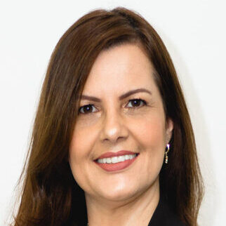
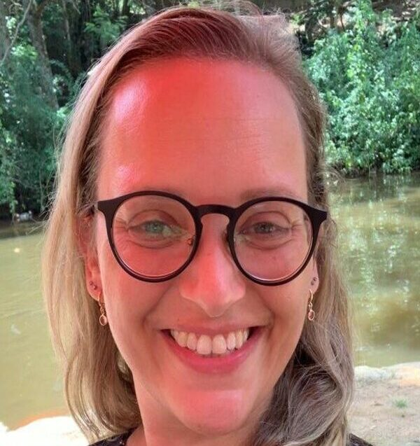
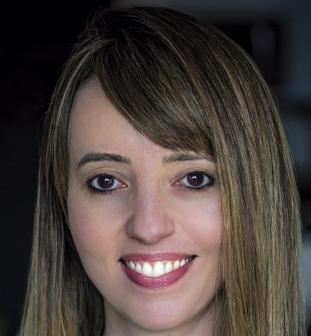

Por que tratar tudo separadamente se somos um ser único?
Realizamos um trabalho personalizado e único no ambiente corporativo e na vida pessoal de cada cliente, especializado no cuidado integrado do ser humano.
Objetivos
- Oferecer o cuidado integrado do indivíduo, facilitado por uma equipe especializada e multidisciplinar.
- Desenvolver habilidades comportamentais, cognitivas e emocionais trazendo os talentos, valores e virtudes de cada colaborador.
- Melhorar a qualidade de vida e acolhimento do indivíduo e prevenir transtornos mentais, baixa produtividade e afastamentos.
Serviços
Conheça tudo que a Equilíbrio Integrado pode oferecer!
História
A Equilíbrio nasceu em novembro de 2020. O questionamento que surgiu foi: Porque tratar tudo separadamente se somos um ser único Corpo + físico + mente + coração + espírito? Uma ideia que a Vania Debacco organizou em sua mente, passando depois para o papel, proposta para as profissionais que abraçaram a ideia, Samanta e Dra. Leila e que foi concretizada com a integração das áreas de terapia florais, nutrição, comportamento, psicologia. Em 2022 ingressou na equipe a Tatiana, formando assim essa equipe maravilhosa multidisciplinar que hoje, está sempre empenhada em fazer um trabalho humanizado, dedicado, com competência e carinho para cada cliente.
Propósito
Realizar um trabalho personalizado e único no ambiente corporativo e na vida pessoal de cada cliente, especializado no cuidado integrado do ser humano. Levar conhecimento e auto desenvolvimento de forma eficaz e positiva, para a saúde física, mental e comportamental. O propósito foi da união das áreas e cuidar das pessoas de forma integral e personalizada, trazendo assim uma visão geral do que precisa ser cuidado, reajustado e acompanhado para obter os melhores resultados e desempenho de cada pessoa e cada empresa, capacitando as pessoas a estarem engajadas para alcançar seu melhor potencial.
Equipe
Vania Debacco
Orientadora Comportamental, Terapeuta e DHO
- Formada em Administração de Empresas
- Pós Graduação em Neuropsicologia
- MBA em Desenvolvimento Humano e Psicologia Positiva
- Practitioner em Programação Neurolinguistica
- Inteligência Emocional
- Mapeamento de Perfil Comportamental VIA
- Autoconhecimento
- Gestão Organizacional
- Mentoria de Carreira
- Desenvolvimento de Pessoas
- Orientação Comportamental Positiva
Dr. Leila Hashimoto
Nutricionista e Doutora em Ciências
- Nutricionista formada pela USP
- Doutora em Ciências pela USP
- Especializada em Nutrição Esportiva
- Saúde Gastrointestinal
- Microbiota Intestinal
- Intolerâncias Alimentares
- Doenças Crônicas
- Pesquisadora e Palestrante
- Consultora Científica
- Mindfulleating
Tatiana Fingermann
Psicóloga, Gestão de Pessoas e Comportamento Alimentar
- Psicóloga formada pela USP
- Pós-graduação em Gestão Estratégica de Pessoas
- Tanalogia
- Psicologia do Esporte
- Especialista em Comportamento Alimentar e Obesidade
- Cirurgia Bariátrica
- Facilitadora de Mindfulness
- Terapias Integrativas
- Autora do Caderno Terapêutico – Primeiros Passos para uma grande transformação.
Samanta Calefi
Terapeuta, Business Partner em RH e DHO
- Formada em Marketing
- MBA em Desenvolvimento Humano e Psicologia Positiva
- Professional & Life Coach
- Desenvolvimento Humano e Organizacional
- Mapeamento de Perfil Comportamental DISC
- Gestão da Cultura Organizacional
- Terapeuta de Florais Alquímicos
- Inteligência Emocional
- Tech Recruiter
- R&S Estratégico e Humanizado